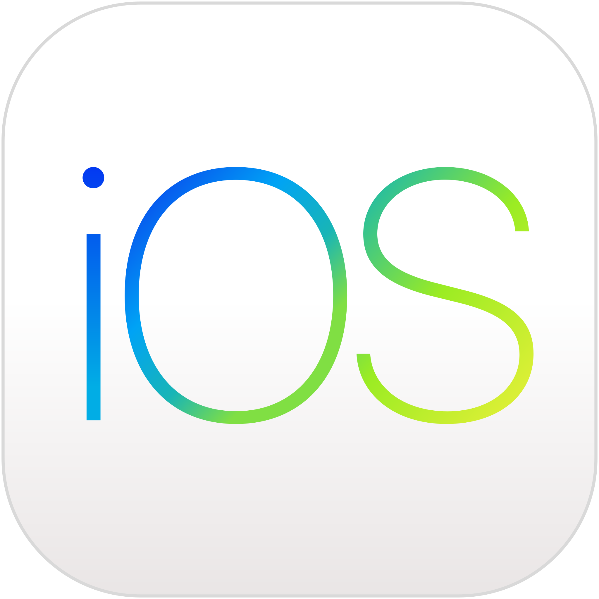
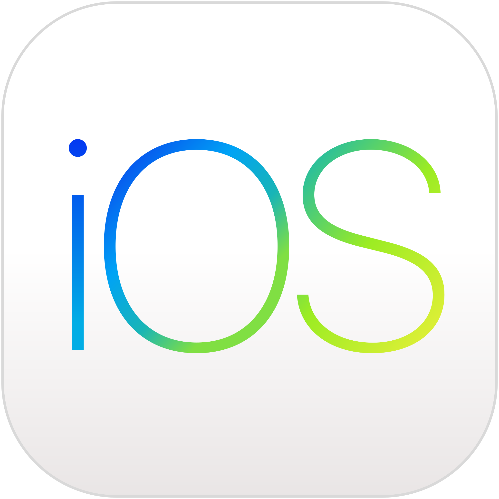

Hello World, I am Alan :D
Hola! I'm a 2023 graduate of Ngee Ann Polytechnic, driven to contribute in the IT field. With a strong foundation, I'm prepared to embark on a meaningful career.
My approach revolves around essential developer soft skills. I believe in continuous learning and adaptability, which have helped me navigate challenges effectively. I value teamwork, understanding that diverse perspectives lead to richer solutions. Attention to detail ensures precision in my work, while problem-solving skills foster innovation.
My journey is a humble one, rooted in a passion for technology and a genuine desire to make a positive impact. I'm excited to grow in the IT world, utilizing my technical and interpersonal abilities to contribute meaningfully. Let's collaborate and shape a better future together.


 


TracknShare Fitness Tracker
TracknShare was crafted during my Android Mobile Development module. This app lets users effortlessly track their runs, showing stats like time, calories, speed, and route on a map. Plus, they can share their achievements on social media and show appreciation for others' posts.
Check it Out
Eventsly
Eventsly was created during my iOS Mobile App Development course. This app helps people of all ages discover their interests by connecting them with local events. Virtual events are an option too. The app also includes a map feature to show nearby events as pins on a map.
Check it Out
Internship at OCBC
A memorable experience in my career journey was my internship at OCBC. I started as an intern in the microservices team, assisting engineers with various tasks. After a while, I transitioned to a different team to develop an internal tool. In my final months, I became a member of the chatbot team, contributing to bot development and maintenance.
Check it Out